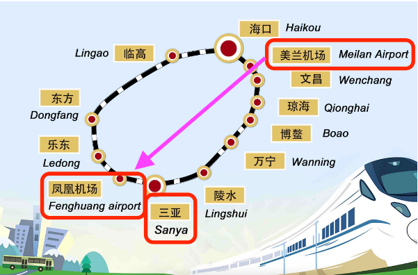
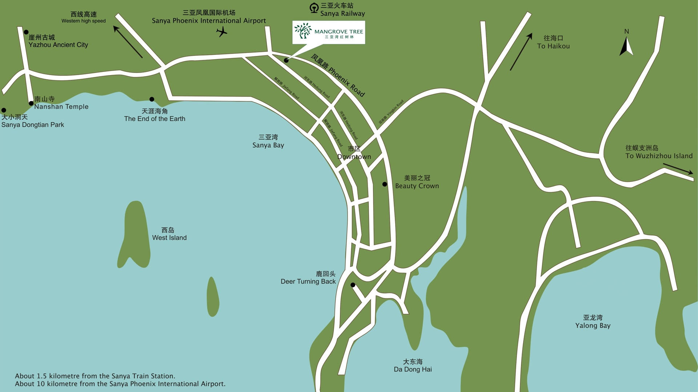
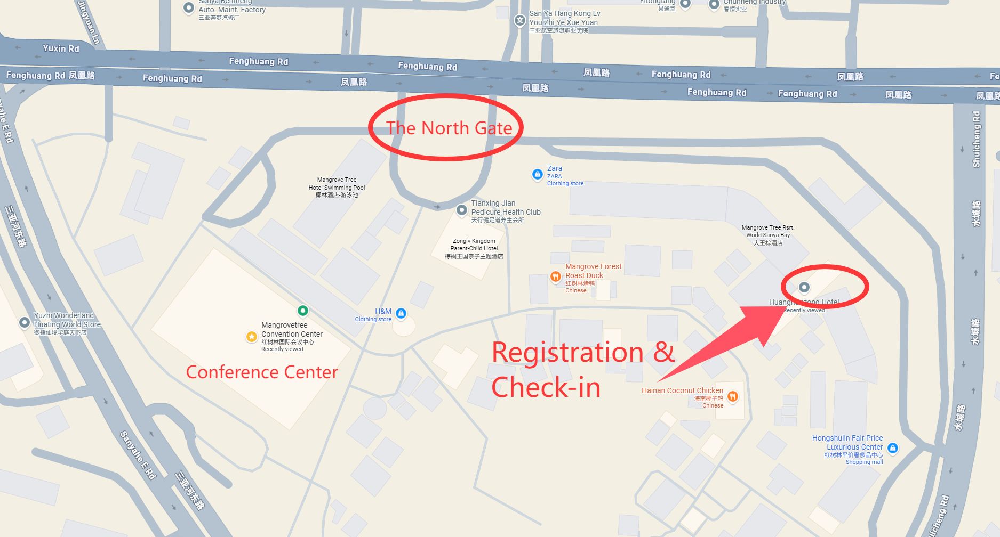
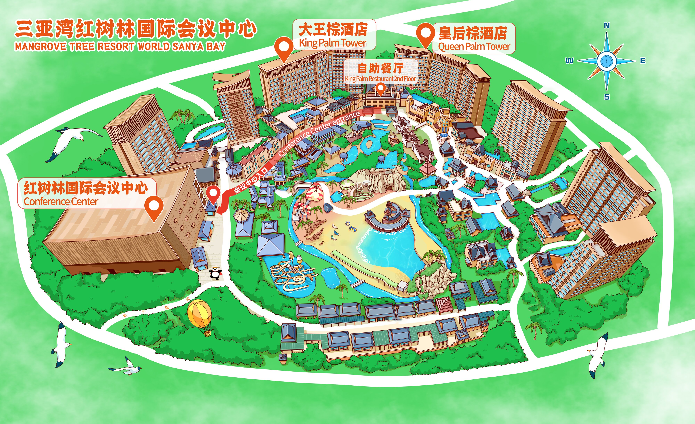

Practical Information
Travel information
How to get to Sanya
The most convenient way to go to Sanya is by air. Sanya Phoenix International Airport is located about 11 kilometers west of the downtown. Bearing a major responsibility, it is the gate that connects Sanya to the whole world. Besides, Haikou Meilan International Airport is linked to the city by high-speed railways.
Sanya Phoenix International Airport (IATA: SYX)
Sanya Phoenix International Airport sits about 11 kilometers west of the city and was put into use in July 1994. It is a 4E standard hub airport, eligible for large wide-body airliners like Boeing 747 and Airbus A340 to take off and land with a full load.The airport now has two terminals and is served by several airlines, both domestic and international.
Tel: 0898-9612333
Haikou Meilan International Airport (IATA: HAK)
Haikou Meilan International Airport was put into use in May 1999. It is an important hub airport in China. Sitting 270 kilometers away from the Sanya , the airport is next to the Meilan Station (Meilan Airport Station) for the bullet train to Sanya Phoenix International Airport Station (Fenghuang airport Station), which takes about 1 hour 40 minutes (for more information, see Intra-city Train and High-speed Railway).
Tel: 0898-65760114
Hainan Island Circle Rail Map

How to get to the venue
After you arrive at Sanya transportation hub, you can go to the venue through the following address: (Click the link to open in the specific map app)
- Mangrove Tree Resort World Sanya Bay: 三亚市凤凰路155号(Baidu Map) / Huanghouzong Hotel(Google Map)
This destination is approximately 1.5 kilometers from the Sanya Train Station, the taxi fare should range from CNY 8 to CNY 15. And about 10 kilometers from the Sanya Phoenix International Airport, the taxi fare should range from CNY 15 to CNY 25.
You can also take a city-bus to the venue. All buses in Sanya support payment with cash or “腾讯乘车码” in WeChat. Here are some choises from the Sanya Phoenix International Airport to the venue:
- Bus No.136: From station 凤凰机场/Phoenix Airport to station 海航学院/HaiHang Academy, and then about 600m walking distance to the venue.
- Bus No.425: From station 凤凰机场/Phoenix Airport to station 三亚火车站/Sanya Train Station, and then about 1.2km walking distance to the venue. Or you can take Sanya tram after getting off at 三亚火车站/Sanya Train Station from station 育秀路/Yuxiu Road to station 凤凰站/Phoenix Station, and then about 400m walking distance to the venue.
If you have any trouble with the address, you can call: +86 898 3238 8888

Where are the Conference Center and Hotels located
The map below shows the facility distribution of the venue.

The Registration and Check-in area is located at the 1st floor between the King Palm Tower and Queen Palm Tower, in the same building as the restaurant.

Tourism, Foods, and Cashless
To fully savor the stunning scenery and delectable cuisine of Sanya, it is highly recommended that you refer to the official visiting guide at visitsanya and Sanya Tourism Handbook.
You have a number of payment options at your fingertips while in China, ranging from mobile payments to bank cards and cash. Please follow this guide to find out more: Guide to Payment Services in China. Because the popular payment method is mobile payment, using cash may be difficult to get back change in many places. Therefore, we recommend that you use Alipay or WeChat Payment.
Printing shops nearby the conference center
鑫尚亿图文广告店
Xinshangyi Printing & Design Shop
Address: No. 21-1, East 1st Lane, Jinjiling Community, Tianya District, Sanya
(Approximately 1.5 km from King Palm Hotel, Mangrove Tree Resort World Sanya Bay; about a 20-minute walk or 5-minute drive)
Opening Hours: 9:00 AM – 11:15 PM
新文佳图文广告店
Xinwenjia Printing & Design Shop
Address: No. 261, Jinjiling Road, Tianya District, Sanya
(Approximately 2 km from King Palm Hotel, Mangrove Tree Resort World Sanya Bay; about a 25-minute walk or 6-minute drive)
Opening Hours: 7:30 AM – 10:00 PM